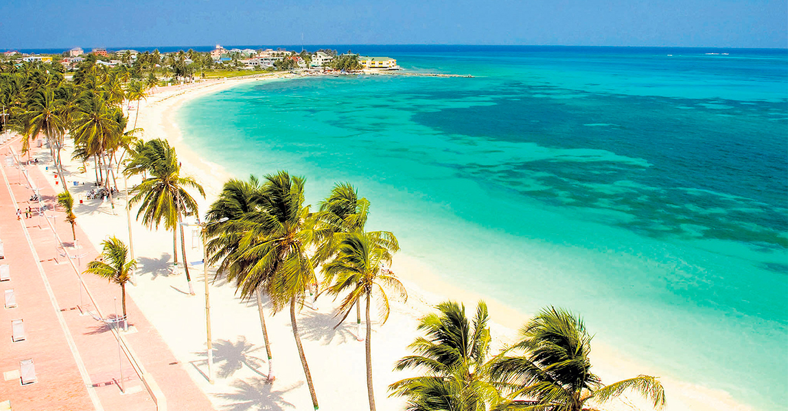

Conheça San Andrés, Colômbia
postado em 23/07/2021 San Andrés é uma ilha localizada no Caribe Colombiano e está a aproximadamente 230 km a leste da costa da Nicarágua e a 750 km ao norte do continente colombiano. A única maneira de chegar da Colômbia é de avião, uma vez que é muito longe para qualquer ferry navegar. A ilha é conhecida por suas praias bonitas, águas cristalinas que oferecem excelentes condições para snorkeling e mergulho, além de uma animada vida noturna composta de excelentes restaurantes e bares. San Andrés também faz parte de um arquipélago, que consiste em duas outras pérolas do Caribe chamadas Ilha de Providencia e Ilha Santa Catalina. Ambas são tropicais e super pitorescas, como se fossem tiradas diretamente de uma revista de viagens. Como a ilha de San Andrés fica distante do continente colombiano, ela é semi-auto-suficiente em termos de serviços governamentais. Há um grande hospital, consulados de vários países e vários departamentos policiais espalhados por ela.
Reservar